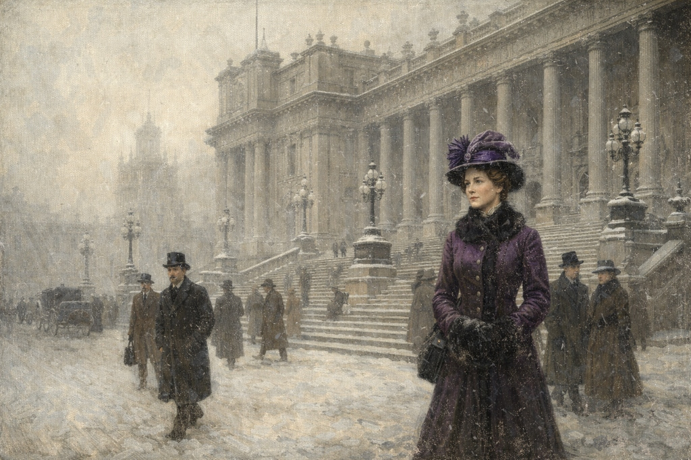
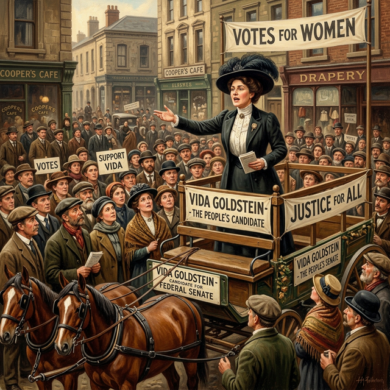
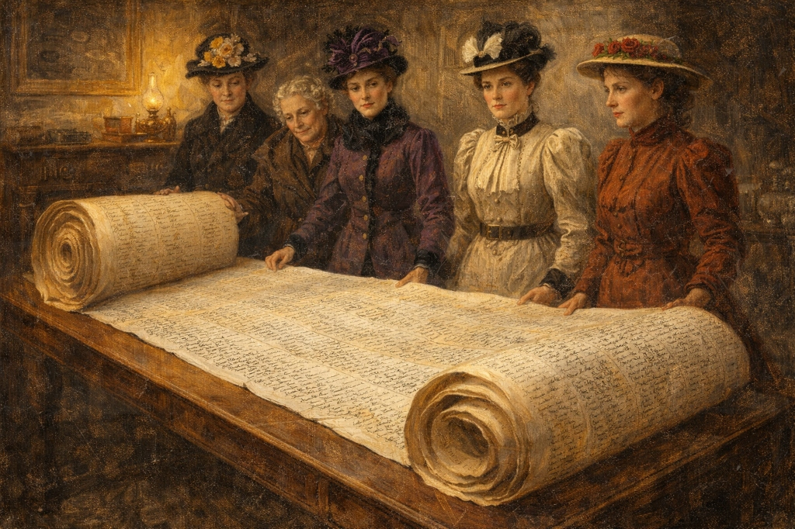

A Woman of Firsts
Vida Goldstein was a trailblazer who showed the world that women could be leaders. She was the first woman in the whole British Empire to run for national parliament!
Growing Up in Victoria
Vida was born in Portland, Victoria, in 1869. Her family was very interesting. Her father was a colonel, and her mother was a suffragist. This meant Vida grew up in a house where people talked about important ideas every day.
Her parents wanted her to be clever and independent. When a big financial crisis happened in Melbourne, Vida and her sisters opened their own school to help support their family. Vida was always ready to find a way to solve a problem!
Learning the Ropes
When she was 21, Vida helped her mother collect signatures for the "Monster Petition." This was a giant document with 30,000 names on it, all asking for women to have the right to vote in Victoria. This was Vida's first taste of politics.
She also spent her time watching the parliament from the gallery. She wanted to learn exactly how laws were made so that she could one day make them herself.

Making History
In 1903, something amazing happened. Vida became a candidate for the Australian Senate. She was the first woman in the British Empire to do this! Even though some people laughed and made fun of her, Vida didn't care.
She ran as an independent, which meant she didn't join a party like Labor or Liberal. She wanted to be free to speak her own mind. She gave brilliant speeches and shocked everyone by getting over 50,000 votes!

Sharing the News
Vida was so famous that she was invited to travel to America. She spoke to the Congress in Washington D.C. She told them how Australian women had already won the right to vote and showed them that it was a great success.
She then went to England to help the women there. People in England called her "the biggest thing that has happened to the woman movement." She was an international star!

A Voice for Peace
When World War I started, Vida took a very brave but difficult stand. She became a pacifist. This meant she was against the war and wanted it to stop. Many people were angry with her because they thought she wasn't being patriotic.
Because of her views on the war, she lost many of her votes. But Vida believed that you should always stand up for what you think is right, even if it makes you unpopular. She was a woman of great courage and principles.
Vida's Bold Path
Click the dates to see how Vida became a world leader.
1869
Born in Portland, Victoria.
1891
Helps collect 30,000 names for the Women's Suffrage Petition.
1902
Speaks to the US Congress about women's rights.
1903
Becomes the first woman to run for national parliament.
1915
Starts the Women's Peace Army during World War I.
1949
Vida Goldstein dies in Melbourne, aged 80.
Want to Learn More?
Visit our detailed biography page for in-depth information, including comprehensive life history and academic references.
📖 Read Full Biography
Detailed biography with sources and references